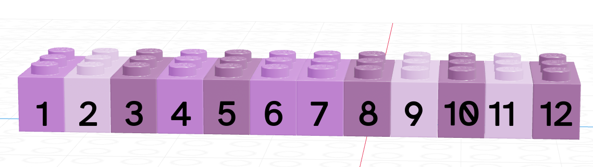
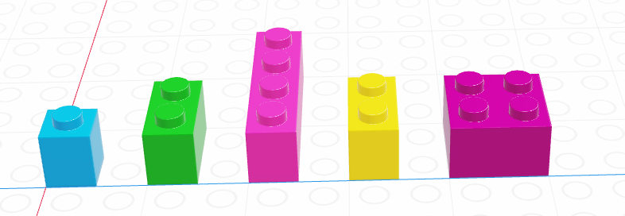
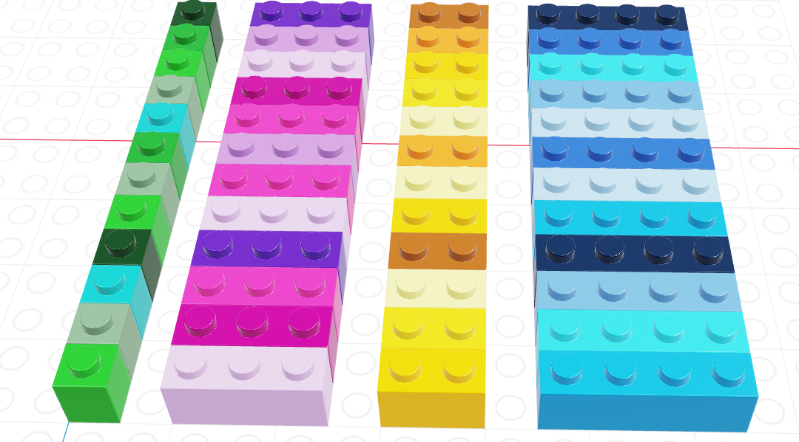

x <- 5
y <- "A character variable"1.5 Introduction to Programming
Basic Definitions
Notevariable
A named object corresponding to a space in computer memory that can be assigned a value
In R, variables are assigned using <-, e.g.
x and y are the variable names, 5 and "a character variable" are the assigned values.
x <- 6Variable values can be re-assigned.
Basic Definitions
Notevariable type
The mode and size of the variable’s stored value(s)
Types can be:
- integers (1, 2, 3, 40932),
- floats (3.1415, 2.71828),
- characters (“Frank”, “Evelyn”, “This is a string”), or
- logicals (TRUE, FALSE)
mode(x)[1] "numeric"mode(y)[1] "character"Basic Definitions
Notevariable structure
A way to arrange and store multiple data values for efficient access
Vector
Notevector
a sequence of multiple values of the same type (think about a column in a spreadsheet)

List
Notelist
a sequence of multiple values; these values can be of the same or different data type.

Data Frame
Notedata frame
a list of vectors which all have the same length.
(Essentially, this is a spreadsheet with strict column/row requirements)

Creating Data Structures
vec <- c(1:10)
df <- data.frame(x = 1:3, y = letters[1:3], z = c(T, F, F))
mylst <- list(x = 1:3, y = letters[1:4], z = c(T, F, F, F, T))What do they look like?
vec [1] 1 2 3 4 5 6 7 8 9 10df x y z
1 1 a TRUE
2 2 b FALSE
3 3 c FALSEmylst$x
[1] 1 2 3
$y
[1] "a" "b" "c" "d"
$z
[1] TRUE FALSE FALSE FALSE TRUEFind the Structure
Use the str() command to investigate the structure of an object
str(vec) int [1:10] 1 2 3 4 5 6 7 8 9 10str(df)'data.frame': 3 obs. of 3 variables:
$ x: int 1 2 3
$ y: chr "a" "b" "c"
$ z: logi TRUE FALSE FALSEstr(mylst)List of 3
$ x: int [1:3] 1 2 3
$ y: chr [1:4] "a" "b" "c" "d"
$ z: logi [1:5] TRUE FALSE FALSE FALSE TRUEAccess Pieces of Objects
Vectors
vec[2:4][1] 2 3 4vec[c(2, 8)][1] 2 8Data Frames
name[rows, cols]
df[1:2, 2:3] y z
1 a TRUE
2 b FALSELists
name[[idx]] - access sub-object
(idx is an integer)
mylst[[3]][1] TRUE FALSE FALSE FALSE TRUEmylst[[2]][c(1, 3)][1] "a" "c"